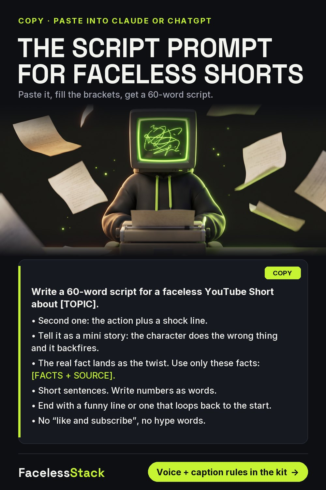
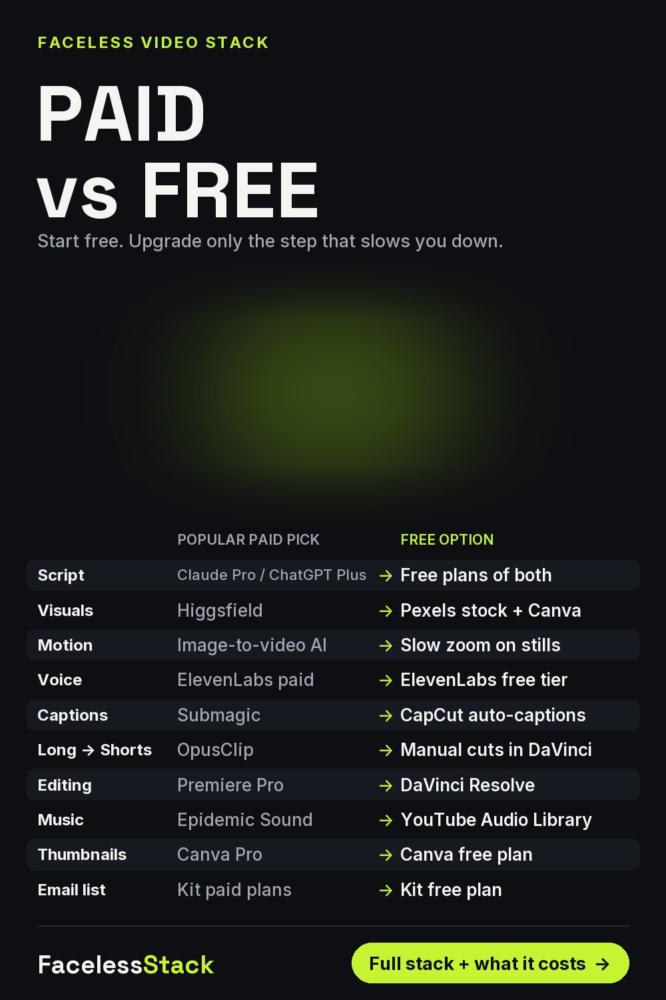
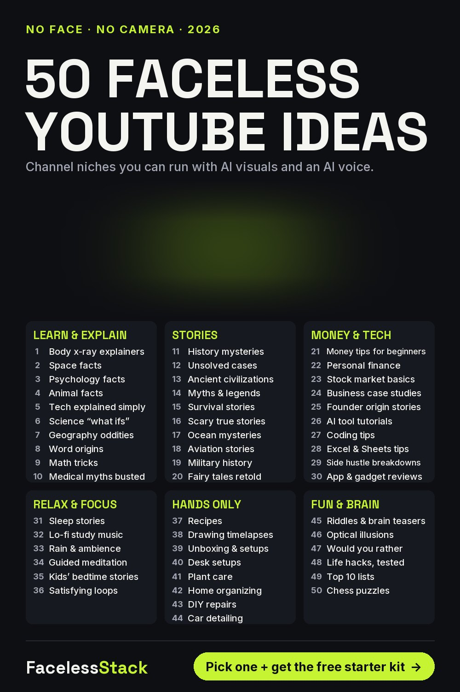
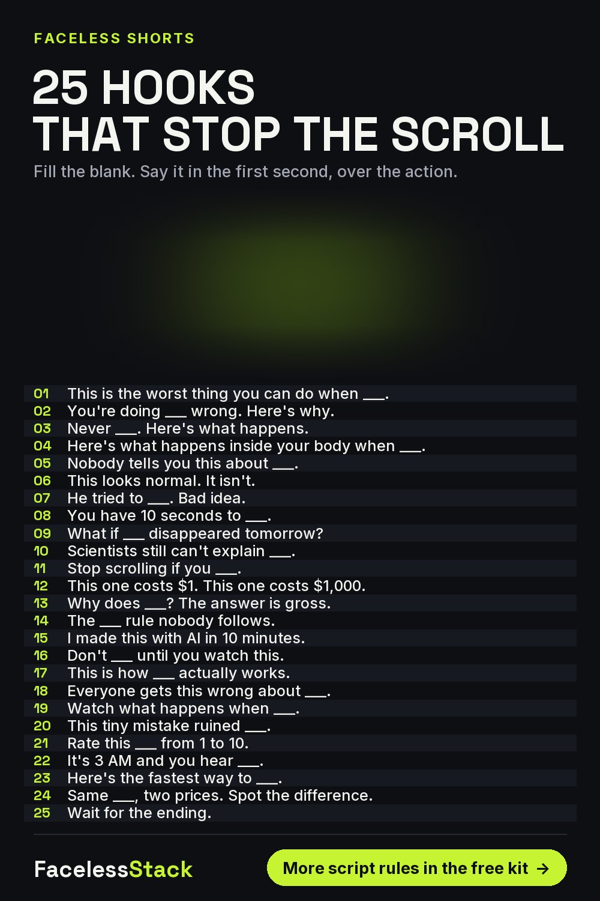
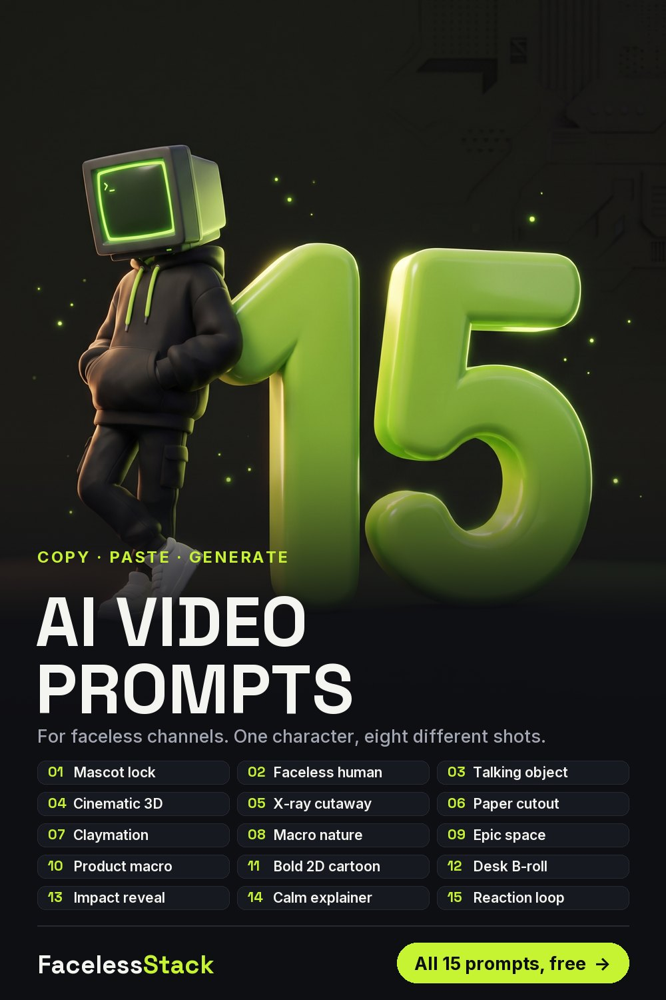
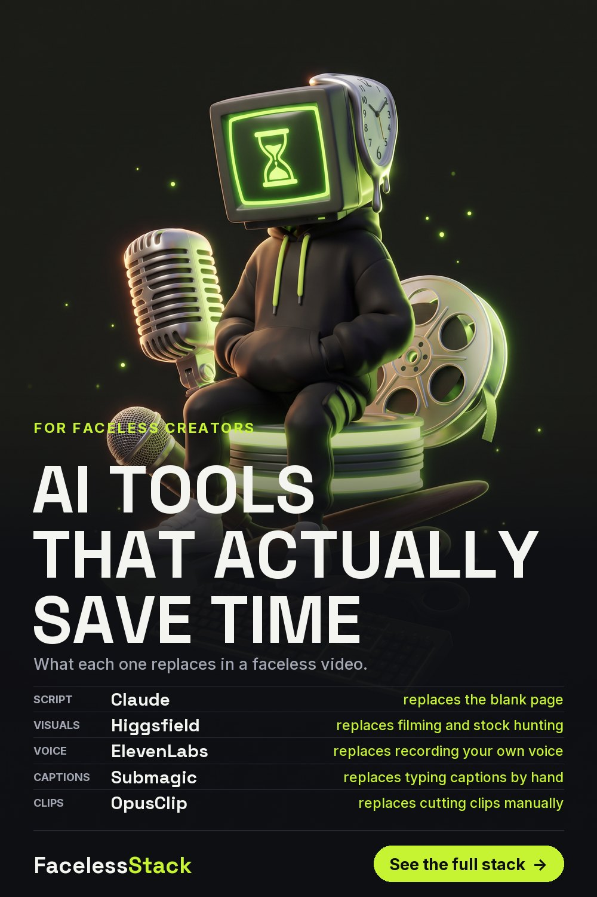
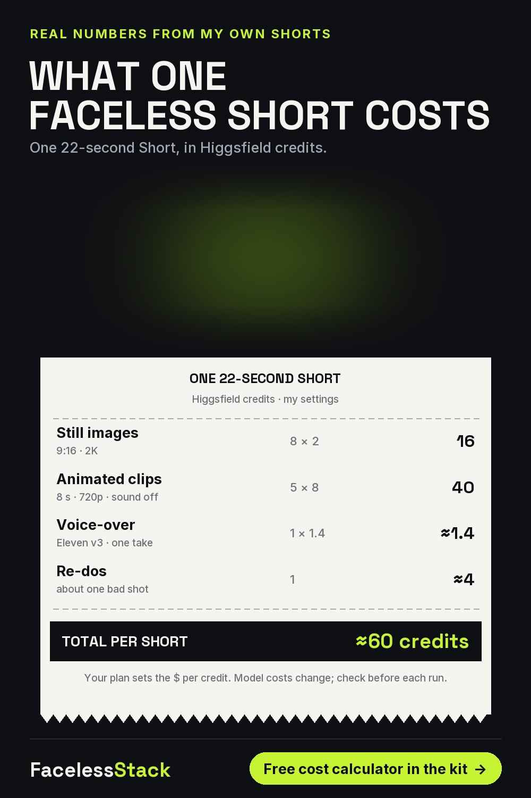
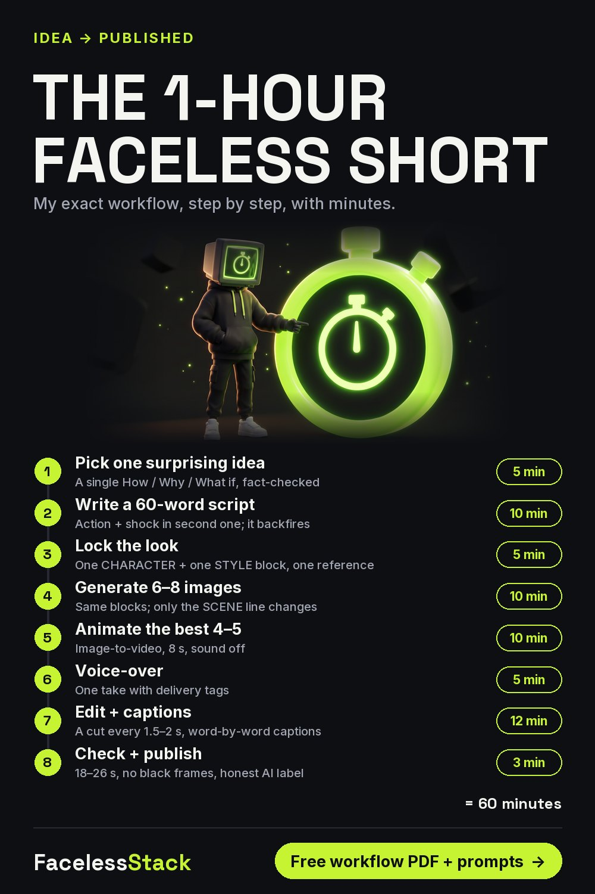
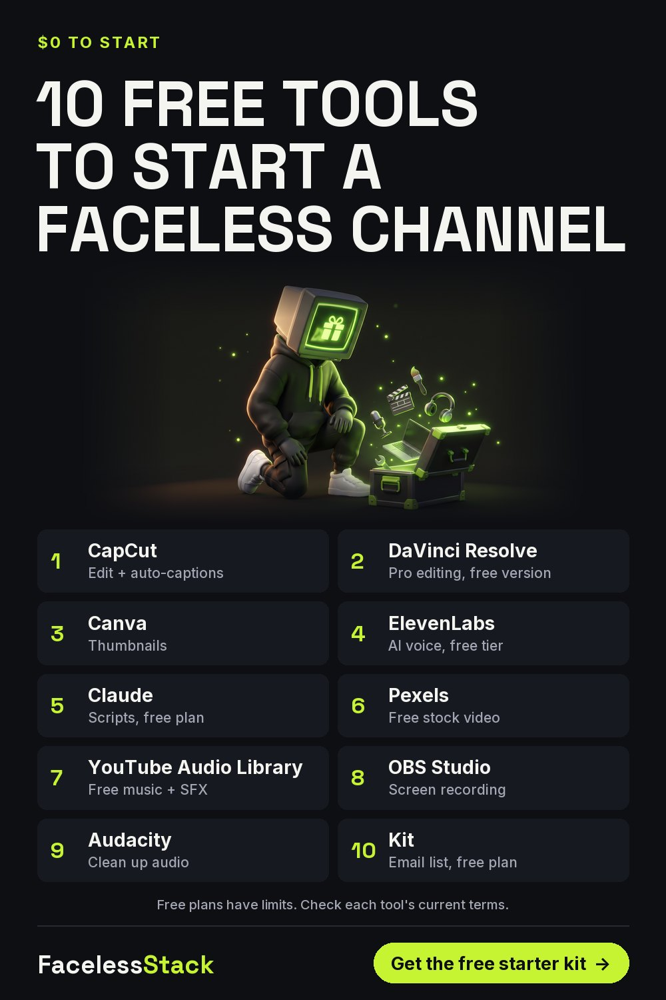
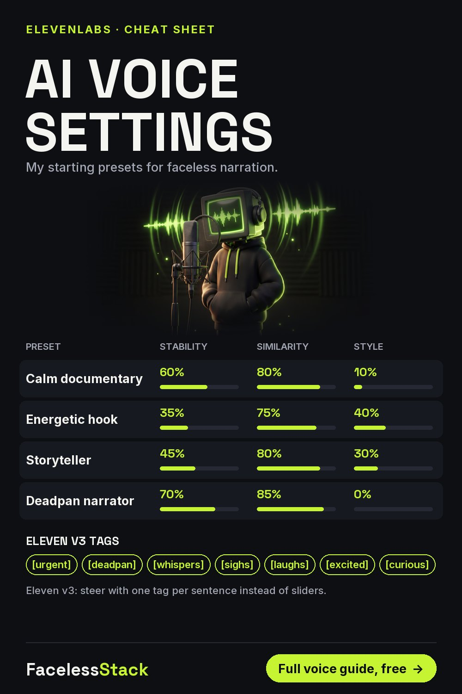

Paste this into Claude or ChatGPT, fill in the two brackets, and you'll get a script built the way my best Shorts are built. Always give it the facts yourself: an AI will happily invent a statistic.
Write a 60-word script for a faceless YouTube Short about [TOPIC]. • Second one: the action plus a shock line. • Tell it as a mini story: the character does the wrong thing and it backfires. • The real fact lands as the twist. Use only these facts: [FACTS + SOURCE]. • Short sentences. Write numbers as words. • End with a funny line or one that loops back to the start. • No “like and subscribe”, no hype words.
Give it the facts and a source yourself. AI models will invent statistics if you let them.
Save this for later:

9 pages: the 1-hour workflow, 15 visual prompts, voice presets, caption rules, a real credit-cost sheet and a 30-day calendar.
Free. One useful email a week. Unsubscribe anytime.
Some links below may be affiliate links. If you subscribe through them I may earn a commission, at no extra cost to you. I've listed a free option next to each one.
| Job | Tool I use | Why | Free option |
|---|---|---|---|
| Visuals | Higgsfield | Cinematic motion and consistent characters | Pexels stock + Canva |
| Voice | ElevenLabs | The most natural narration I've tested | ElevenLabs free tier |
| Captions & edit | Submagic | Animated captions in minutes | CapCut auto-captions |
| Email list | Kit | Owning your audience | Kit free plan |








